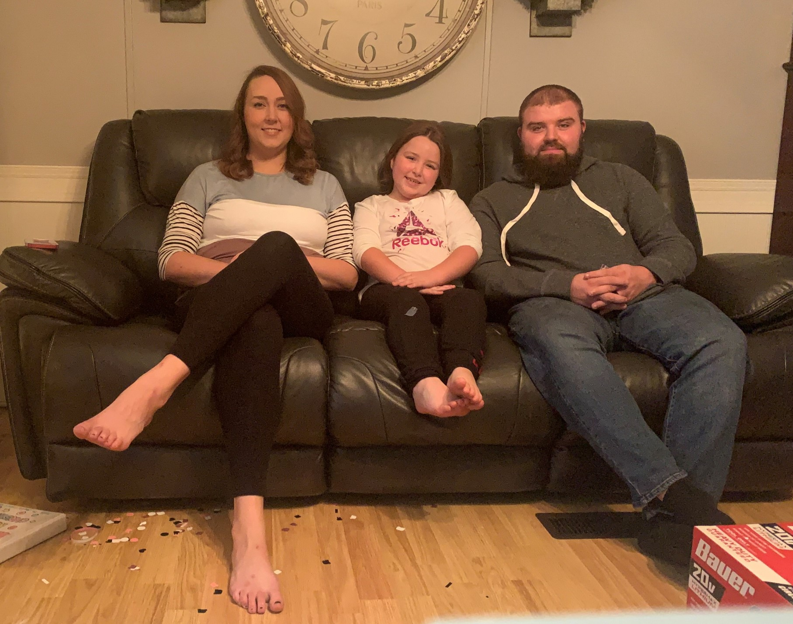

| Hello everyone! My name is Breanna Arnett and I am a 5th grade Math and Science teacher at Salyersville Grade School is salyersville, KY. I graduated Morehead State University in 2014 with a Bachelor's Degree in Elementary Education and I am currently taking class at Eastern Kentucky University in hopes to obtain my Master's Degree in Library Science. I am hoping one day to become my schools' librarian as our current schools' librarian only has a couple years unitl she is able to retire.
My love for reading didn't begin at a young age. Actually, I didn't like reading at all and struggled with it during my elementary years in school. I was never the best reader and was very slow in the process of reading and understanding what I was reading. But with the help of my teachers and the dedication of my mother, I grew as a reader but still didn't take up reading for pleasure until I was a junior in high school. One of my good friends introduced me to the author Nicholas Sparks and I fell in love with reading from there.
But the story doesn't end here.
Through this website, I hope I am able to introduce new titles and authors to others who might be looking for a good book or a change in genres. I hope to share my love with others and maybe get a few suggestions for new titles or books that I haven't discovered yet! |
 |